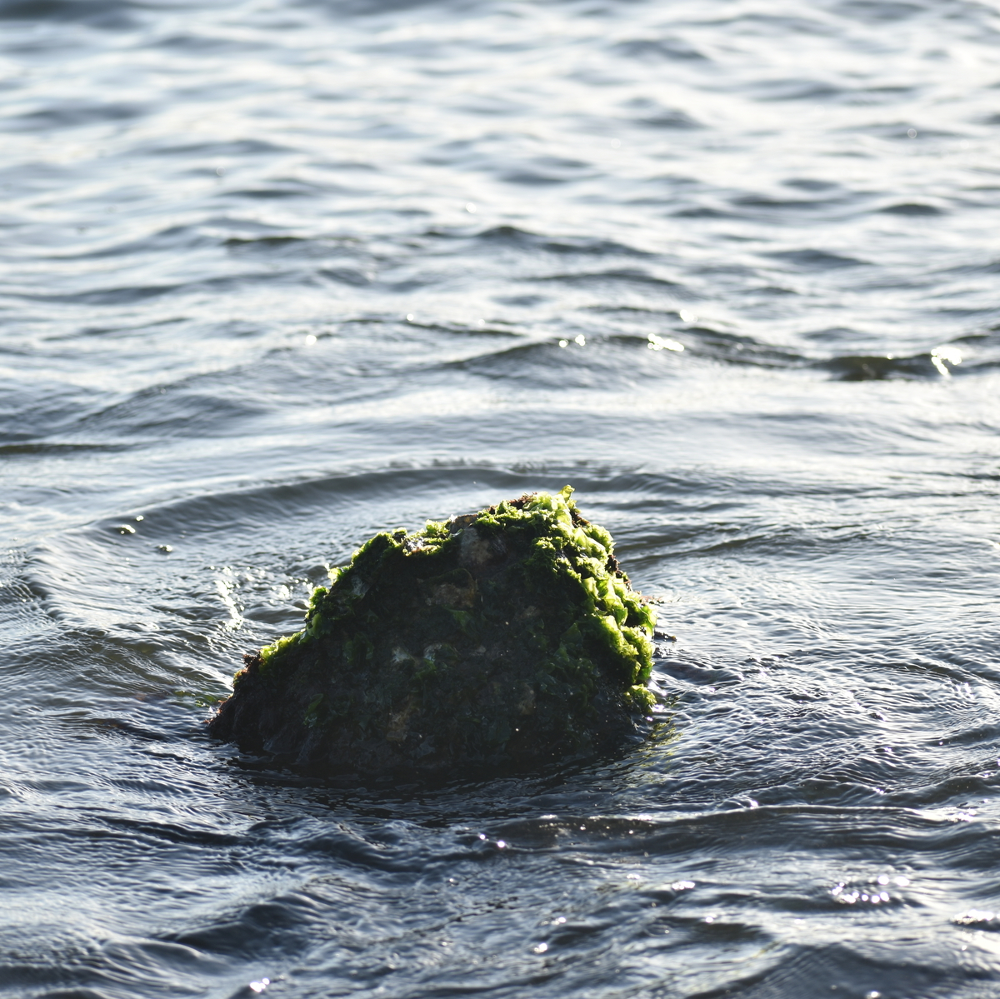

Musicista e pesquisador nascido em Vitória.
Licenciado em Música pela UFMG.
Mestrando em Artes pela UFES - linha de pesquisa Interartes e Novas Mídias sob orientação de Leandro Costalonga.
Professor de Arte na Rede Pública de Ensino do Espírito Santo.
Música e computação: perspectivas de um musicista
Felippe Barros (PPGA-UFES)

Música acusmática
Música pensada para ser escutada por autofalantes, em oposição à performance humana. Produção de composições eletrônicas por síntese e manipulação digital de áudio gravado.
Sons gravados, organizados por uma DAW (Digital Audio Workstation).

Sons gravados e sintetizados em PureData (Pd), organizados por uma DAW.

Instrumentos híbridos
Joystick com microfone piezo acoplado.
Sons programados em Pd.
Escultura interativa.
Cimento, canudos biodegradáveis, borracha, epóxi, potenciômetros, sensor ultrassônico, Arduino Nano e SuperCollider.

Partituras não convencionais e sistemas musicais interativos
Inspirada pelo conto El Jardín de senderos que se bifurcan, de Jorge Luis Borges, a peça utiliza recursos eletrônicos para modificar ou estender sons da flauta através do tempo.
Vídeo-jogo controlado por improvisos musicais, elaborado com Caio Campos.
Inspirado no clássico "Pong" da ATARI, PING é um vídeo-jogo controlado por musicistas que utilizam seus instrumentos no lugar de manetes (ou raquetes).
Sorteador de versos poéticos de Manoel de Barros, escolhidos por sua musicalidade implícita.
O programa funciona como uma partitura aberta para improvisação livre.
Disponível aqui: https://ofefo.com.br/mus/silencio

Máquina criativa, capaz de improvisar duos com musicistas em tempo real. Pensada como um sistema para prática individual de improvisação livre, disponível como software livre. https://github.com/ofefo/engenhoca